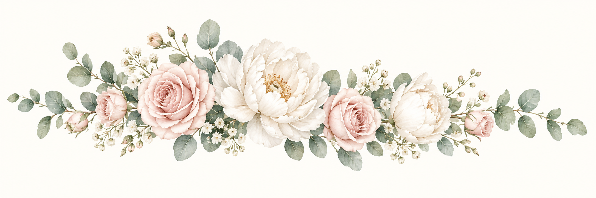
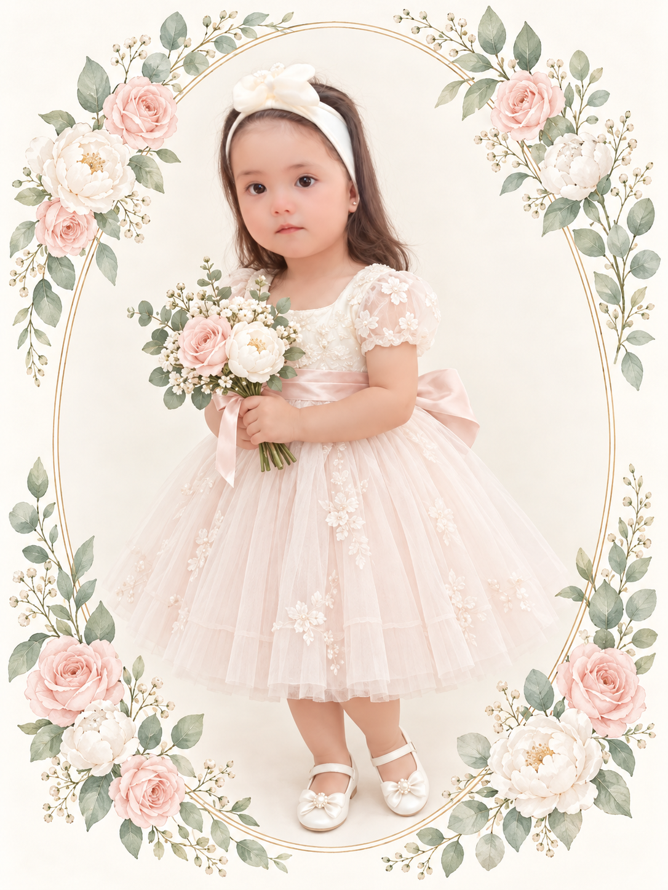

Ceremonia
Parroquia del Sagrario de la Catedral
«Santo Domingo»
Calle Santiváñez, entre Av. Ayacucho
Ubicación de la iglesiaUNA PEQUEÑA VIDA · UNA INMENSA BENDICIÓN
Eymi Khaleesi
Una invitación hecha con mucho cariño para ti

CON LA BENDICIÓN DE DIOS
ARNEZ FERRUFINO
Hoy comienza mi camino de fe,
rodeada de amor y de quienes
llenan mi vida de luz.

«Dejen que los niños vengan a mí».Marcos 10:14
UN DÍA PARA GUARDAR EN EL CORAZÓN
Sábado 10 de octubre
PARA MI BAUTIZO
Que el agua bendita ilumine mis pasos
y el amor de Dios me acompañe siempre.
MI PRIMER REFUGIO DE AMOR
Max Arnez Guzman&Carla Ferrufino Pastor
De sus manos doy mis primeros pasos;
con su amor comienzo mi camino de fe.
DOS CORAZONES QUE GUIARÁN MIS PASOS
Roger Waldo Colque&Ayde Sandra Yujra
Gracias por tomar mi mano y acompañarme
con su amor, su ejemplo y su fe.
TE ESPERAMOS CON MUCHO AMOR
Parroquia del Sagrario de la Catedral
«Santo Domingo»
Calle Santiváñez, entre Av. Ayacucho
Ubicación de la iglesiaUn momento para celebrar juntos
Barrio Don Bosco
Av. Santo Domingo
A MIS INVITADOS
Nuestra mayor alegría es compartir con la familia y los amigos este día tan especial. Gracias por ser parte de mi historia y acompañarme con tanto cariño.
Por favor, confirma tu asistencia
pulsando el botón a continuación.
Con mucho cariño, te esperamos.